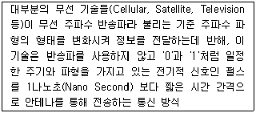
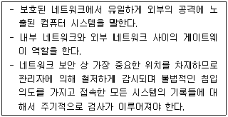

네트워크관리사-1급 (2017-10-29 기출문제)
1과목: TCP/IP
1. NAT(Network Address Translation)에 대한 설명으로 옳지 않은 것은?
- 사설 IP 주소를 공인 IP 주소로 바꿔주는데 사용하는 통신망의 주소 변환기술이다.
- NAT를 사용할 경우 내부 사설 IP 주소는 C Class를 사용해야만 정상적인 동작이 가능하다.
- 외부 침입자가 공격하기 위해서는 사설망의 내부 사설 IP 주소를 알아야 하기 때문에 공격이 어려워지므로 내부 네트워크를 보호할 수 있는 장점이 있다.
- NAT를 이용하면 한정된 공인 IP 주소를 절약 할 수 있다.
(정답률: 76%)

2. 서브넷이 최대 25개의 IP Address를 필요로 할 때, 서브넷 마스크로 올바른 것은?
- 255.255.255.192
- 255.255.255.224
- 255.255.192.0
- 255.255.224.0
(정답률: 75%)
3. OSPF에 대한 설명으로 옳지 않은 것은?
- 기업의 근거리 통신망과 같은 자율 네트워크 내의 게이트웨이들 간에 라우팅 정보를 주고받는데 사용되는 프로토콜이다.
- 대규모 자율 네트워크에 적합하다.
- 네트워크 거리를 결정하는 방법으로 홉의 총계를 사용한다.
- OSPF 내에서 라우터와 종단국 사이의 통신을 위해 RIP가 지원된다.
(정답률: 75%)
4. IPv6에 대한 설명으로 잘못된 것은?
- IPv6는 IPng의 일부분으로 여기서 ng는 Next Generation을 의미한다.
- IPv6가 필요하게 된 동기는 현재 인터넷 사용자가 급증하기 때문이다.
- IPv6는 32bit로 구성되어 있다.
- IPv6는 암호처리 및 사용자 인증기능이 내장 되어 있다.
(정답률: 88%)
5. IP 프로토콜의 헤더 체크섬(Checksum)에 대한 설명 중 올바른 것은?
- 체크섬 필드를 '0'으로 하여 계산한다.
- 네트워크에서 존재하는 시간을 나타낸다.
- 데이터 그램의 총 길이를 나타낸다.
- IP 헤더에 대해서만 포함되며 데이터 필드를 포함한다.
(정답률: 64%)
6. UDP 헤더 포맷에 대한 설명으로 옳지 않은 것은?
- Source Port : 데이터를 보내는 송신측의 응용 프로세스를 식별하기 위한 포트 번호이다.
- Destination Port : 데이터를 받는 수신측의 응용 프로세스를 식별하기 위한 포트 번호이다.
- Length : 데이터 길이를 제외한 헤더 길이이다.
- Checksum : 전송 중에 세그먼트가 손상되지 않았음을 확인 할 수 있다.
(정답률: 79%)
7. IP Address '11101011.10001111.11111100.11001111' 가 속한 Class는?
- A Class
- B Class
- C Class
- D Class
(정답률: 63%)
8. SNMP 클라이언트 프로그램을 실행하는 주체와 SNMP 서버 프로그램을 실행하는 각각의 주체는?
- 매니저, 매니저
- 매니저, 에이전트
- 에이전트, 매니저
- 에이전트, 에이전트
(정답률: 69%)
9. FTP(File Transfer Protocol)가 사용하는 두 개의 TCP 포트를 바르게 짝지은 것은?
- 20 - 데이터 전송, 21 - 제어용
- 20 - 데이터 전송, 21 - 데이터 전송
- 20 - 제어용, 21 - 데이터 전송
- 20 - 제어용, 21 – 제어용
(정답률: 63%)
10. 다음 중 ICMP의 Message Type필드의 유형과 질의 메시지 내용이 잘못 연결된 것은?
- 0 - Echo Reply: 질의 메시지에 응답하는데 사용된다.
- 5 - Timestamp Request: 로컬 네트워크의 라우터를 파악하기 위해 사용된다.
- 8 - Echo Request: 네트워크상의 두 개 이상의 장비의 기본 연결을 검사하기 위해 사용된다.
- 17 - Address Mask Request: 장비의 서브넷 마스크를 요구하는데 사용된다.
(정답률: 52%)
11. RARP에 대한 설명으로 옳지 않은 것은?
- RARP는 별도의 RARP 기능을 수행하는 서버가 필요 없다.
- 디스크를 가지고 있지 않은 호스트가 자신의 IP 주소를 서버로부터 얻어내기 위해 사용된다.
- 하드웨어 주소를 IP Address로 맵핑시킨다.
- ARP와 거의 같은 패킷 구조를 가지며, ARP처럼 이더넷 프레임의 데이터 안에 한 부분으로 포함된다.
(정답률: 46%)
12. IPv4 헤더내 필드의 내용 중 해당 패킷이 분할된 조각 중의 하나임을 알 수 있게 하는 것은?
- 'Identification' 필드 = 1000
- 'Do Not Fragment' 비트 = 0
- 'More Fragment' 비트 = 0
- 'Fragment Offset' 필드 = 1000
(정답률: 62%)
13. 라우터를 경유하여 다른 네트워크로 갈 수 있는 프로토콜은?
- NetBIOS
- NetBEUI
- DLC
- TCP/IP
(정답률: 83%)
14. TCP와 UDP의 차이점을 설명한 것 중 옳지 않은 것은?
- TCP는 전 이중방식 스트림 중심의 연결형 프로토콜이고, UDP는 비 연결형 프로토콜이다.
- TCP는 전달된 패킷에 대한 수신측의 인증이 필요하지만 UDP는 그렇지 않다.
- 일반적으로 동영상과 같은 실시간 데이터 전송에는 UDP가 사용된다.
- UDP는 TCP에 비해 오버헤드가 크다.
(정답률: 84%)
15. TCP/IP에 대한 설명으로 옳지 않은 것은?
- Telnet과 FTP는 모두 TCP/IP 프로토콜 위에서 동작한다.
- TCP는 전송 계층(Transport Layer) 프로토콜이다.
- IP는 데이터의 에러검출을 담당한다.
- TCP/IP의 데이터는 패킷이라 불리는 단위로 전송된다.
(정답률: 75%)
16. Subnet Mask에 대한 설명으로 옳지 않은 것은?
- 각 IP Address의 Broadcasting 범위를 지정하기 위해 사용된다.
- 모든 IP Address의 Subnet Mask가 동일하다.
- 하나의 네트워크 Class를 여러 개의 네트워크 Segment로 분리하여 IP Address를 효율적으로 사용할 수 있게 한다.
- 하나의 네트워크 IP Segment란 Broadcasting Boundary를 의미한다.
(정답률: 75%)
2과목: 네트워크 일반
17. 다음에서 설명하는 통신방식은?

- WLAN(Wireless LAN)
- IrDA(Infrared Data Association)
- UWB(Ultra Wide Band)
- Bluetooth
(정답률: 55%)
18. 에러 검출(Error Detection)과 에러 정정(Error Correction)기능을 모두 포함하는 기법으로 옳지 않은 것은?
- 검사합(Checksum)
- 단일 비트 에러 정정(Single Bit Error Correction)
- 해밍코드(Hamming Code)
- 상승코드(Convolutional Code)
(정답률: 54%)
19. Bus Topology의 설명 중 올바른 것은?
- 문제가 발생한 위치를 파악하기가 쉽다.
- 각 스테이션이 중앙스위치에 연결된다.
- 터미네이터(Terminator)가 시그널의 반사를 방지하기 위해 사용된다.
- Token Passing 기법을 사용한다.
(정답률: 67%)
20. 데이터 흐름 제어(Flow Control)와 관련 없는 것은?
- Stop and Wait
- XON/OFF
- Loop/Echo
- Sliding Window
(정답률: 56%)
21. 패킷 교환을 수행하기 위해서 패킷 교환기가 갖추어야 할 기본 기능으로 옳지 않은 것은?
- 통신을 하고자 하는 단말기 사이에 가상 회선을 설정하고 해제하는 기능
- 다수의 중계로에서 최적의 경로 선택 기능
- 전송량을 제어하여 수신 버퍼의 범람 방지 기능
- 다수의 링크를 하나의 논리 채널로 다중화 하는 기능
(정답률: 68%)
22. OSI 7 Layer 중 LAN의 프로토콜로 논리 링크제어(LLC) 및 매체엑세스제어(MAC)를 사용하는 계층은?
- 물리 계층
- 데이터링크 계층
- 전송 계층
- 네트워크 계층
(정답률: 78%)
23. 광대역 전송 방식에 대한 설명으로 옳지 않은 것은?
- 아날로그 신호를 전송한다.
- 광 케이블을 사용하여 고속 전송이 가능하다.
- 시분할 다중화 방식을 통해 독립적인 채널을 가질 수 있다.
- 음성, 영상, 데이터 등을 동시에 전송할 수 있다.
(정답률: 44%)
24. 인터넷 프로토콜들 중 OSI 참조 모델의 네트워크 계층에 속하지 않는 프로토콜은?
- IP
- ICMP
- UDP
- ARP
(정답률: 76%)
25. 전송 오류에 대한 설명으로 옳지 않은 것은?
- 중복은 오류검출에 이용하기 위한 여분의 비트들을 전송하는 개념이다.
- 오류검출의 일반적 네 가지 방법으로는 수직중복검사, 세로중복검사, 순환중복검사, 검사합이 있다.
- 전송오류는 보통 OSI 참조모델의 데이터링크 계층에서 검출되고, 물리 계층에서 정정된다.
- 오류의 종류는 단일비트오류, 다중비트오류, 폭주오류의 범주로 나눌 수 있다.
(정답률: 58%)
26. 다음 보기 중에서 Wifi의 보안을 설정하는 방법으로 보안수준이 가장 낮은 것은?
- WPA-TKIP(Wi-Fi Protected Access) 모드로 설정한다.
- WEP(Wired Equivalent Privacy) 모드로 설정한다.
- WPA2-AES 모드로 설정한다.
- WPS(Wi-Fi Protected Setup) 모드로 설정한다.
(정답률: 38%)
27. 광케이블을 이용하는 통신에서, 저손실의 파장대를 이용하여 광 파장이 서로 다른 복수의 광 신호를 한 가닥의 광섬유에 다중화 시키는 방식은?
- 코드 분할 다중 방식(CDM)
- 직교 분할 다중 방식(OFDM)
- 시간 분할 다중 방식(TDM)
- 파장 분할 다중 방식(WDM)
(정답률: 76%)
3과목: NOS
28. DNS 데이터베이스 레코드의 유형 중 연결이 옳지 않은 것은?
- MX - 메일 교환기 호스트의 메시지 라우팅을 제공한다.
- A - 호스트 이름을 IPv4 주소로 매핑한다.
- CNAME - 주소를 호스트이름으로 매핑한다.
- NS - 이름 서버를 나타낸다.
(정답률: 47%)
29. Linux 시스템에서 네트워크 설정과 관련 없는 파일은?
- /etc/sysconfig/network
- /etc/motd
- /etc/resolv.conf
- /etc/sysconfig/network-scripts/ifcfg-eth0
(정답률: 64%)
30. Windows Server 2008 R2의 DNS Server 역할에서 지원하는 '역방향 조회'에 대한 설명으로 옳은 것은?
- 클라이언트가 정규화 된 도메인 이름을 제공하면 IP주소를 반환하는 것
- 클라이언트가 IP주소를 제공하면 도메인을 반환하는 것
- 클라이언트가 도메인을 제공하면 라운드로빈 방식으로 IP를 반환하는 것
- 클라이언트가 도메인을 제공하면 하위 도메인을 반환하는 것
(정답률: 67%)
31. Windows 2008 R2 Server와 UNIX 운영체제 사이의 사용자 파일 전송을 지원하여 Windows와 UNIX가 혼용된 엔터프라이즈 환경에서 파일 공유를 제공하는 서비스는?
- NFS
- DNS
- NTFS
- DHCP
(정답률: 52%)
32. Linux 시스템에서 특정 파일의 권한이 '-rwxr-x--x' 이다. 이 파일에 대한 설명 중 옳지 않은 것은?
- 소유자는 읽기 권한, 쓰기 권한, 실행 권한을 갖는다.
- 소유자와 같은 그룹을 제외한 다른 모든 사용자는 실행 권한만을 갖는다.
- 이 파일의 모드는 '751' 이다.
- 동일한 그룹에 속한 사용자는 실행 권한만을 갖는다.
(정답률: 61%)
33. Linux DNS의 SOA(Start Of Authority) 레코드에 대한 설명으로 옳지 않은 것은?
- Zone 파일은 항상 SOA로 시작한다.
- 해당 Zone에 대한 네임서버를 유지하기 위한 기본적인 자료가 저장된다.
- Refresh는 주 서버와 보조 서버의 동기 주기를 설정한다.
- TTL 값이 길면 DNS의 부하가 늘어난다.
(정답률: 48%)
34. 특정 시스템에 이미 최적화되어 컴파일 된 소스를 묶어서 같은 종류의 다른 시스템에서 그대로 풀어서 사용할 수 있도록 만든 Linux의 바이너리 패키지는?
- RFC
- RPM
- SRC
- CONF
(정답률: 65%)
35. Linux Server의 bind에 대한 설명으로 올바르지 않은 것은?
- bind는 NAME Server와 resolver를 구현한 DNS 소프트웨어이다.
- bind는 용도에 따라 NAME Server로만 작동할 수도 있다.
- bind는 용도에 따라 NAME Server와 resolver 두 가지 기능을 하도록 설정이 가능하다.
- DNS는 UDP 포트번호 80번을 사용한다.
(정답률: 68%)
36. 다음 중 이동통신에서 기존의 4세대(4G)에 비해 향상된 성능 및 용량을 제공하고자 연구된 5세대(5G) 기술에 대한 설명 중 올바르지 않은 것은?
- SHF/EHF 대역 등 고주파를 사용하여 기존 LTE 대비 1,000배 정도의 데이터 전송률을 획득할 수 있다.
- 매크로셀, 피코셀, 펨토셀, 릴레이 노드 등 소형셀로 구성된 이종 망을 활용할 수 있다.
- 3D 빔형성 기술과 같은 싱글 빔을 활용하여 동시에 고용량 데이터 서비스가 가능하다.
- Advanced D2D(Device to Device) 기술을 사용할 수 있다.
(정답률: 43%)
37. DNS 프로토콜 자체의 취약성으로 캐시 DNS에 저장된 쿼리 정보를 위, 변조하는 것으로 공격자가 지정한 주소로 DNS Cache 변경이 가능하여 악성코드 감염 등에 악용되는 공격행위는?
- DNS Poisoning
- ARP Spoofing
- DDOS
- Sniffing
(정답률: 54%)
38. Hyper-V를 이용한 가상화의 장점에 해당되지 않는 것은?
- 서버의 운영 및 유지관리비용 절감
- 테스트 환경 재현시간 단축으로 테스트 효율성 향상
- 서버 가용성 향상
- 저사양 하드웨어를 묶어서 고성능의 환경구현
(정답률: 73%)
39. Linux 시스템 명령어 중 root만 사용가능한 명령은?
- chown
- chgrp
- Is
- rm
(정답률: 63%)
40. Windows Server 2008 R2의 액티브 디렉토리 도메인 서비스의 백업에 관한 설명으로 옳지 않은 것은?
- Windows Server 2008 R2 백업 유틸리티는 'Windows Server 백업' 및 'Wbadmin.exe' 이다.
- Windows Server 2008 R2 설치 시 기본적으로 설치되어 있지 않다.
- Windows Server 2008 R2 백업은 디스크 또는 DVD에서만 실행된다.
- Windows Server 2008 R2 백업은 별도의 옵션을 설정하지 않을 경우 AD DS(Active Directory Domain Services)를 포함하여 시스템 상태 데이터만 백업한다.
(정답률: 52%)
41. Windows Server 2008 R2의 Hyper-V에서 운영체제를 설치 운영하다가 특정 프로그램을 잘못 설치하거나 삭제하여 시스템에 문제가 생기는 경우가 있다. 이때 운영체제를 성공적으로 설치한 시점으로 되돌리기 위하여 중요한 시점을 저장하는 것을 무엇이라고 하는가?
- 스냅샷(snapshot)
- 가상 머신
- 가상 소프트웨어
- 가상 하드디스크
(정답률: 73%)
42. Windows Server 2008 R2에서 보안 템플릿에 적용할 수 있는 항목에 관한 설명으로 옳지 않은 것은?
- 파일시스템 - 파일과 폴더에 대한 NTFS 권한 제어
- 레지스트리 보안 - 주어진 레지스트리 키를 보거나 변경할 수 있는 권한 제어
- 시스템 서비스 - 서비스 시작과 중지 그리고 변경할 권한을 가진 사람을 제어
- 계정 정책 - 다양한 로컬 그룹에서 들어오고 남겨지는 계정에 대한 제어
(정답률: 55%)
43. Windows Server 2008 R2에서 SID(Security Identifier)에 대한 설명으로 옳지 않은 것은?
- 윈도우의 각 사용자나 그룹에 부여되는 고유한 식별번호이다.
- 사용자가 로그인을 수행하면 접근 토큰(엑세스 토큰)이 생성되고, 해당 토큰에는 로그인한 사용자와 그 사용자가 속한 모든 작업 그룹들에 관한 SID 정보가 담겨진다.
- 접근 토큰의 사본은 그 사용자에 의해 시작된 모든 프로세스에게 할당된다.
- 사용자 계정 및 패스워드 정보를 담고 있는 passwd 파일에 SID 정보가 저장된다.
(정답률: 58%)
44. 삼바 서비스 데몬 중 WINS(Windows Internet Name Service)를 담당하고, 클라이언트를 위한 NetBIOS 지원, 서비스 통지(Browsing) 지원, 컴퓨터 이름과 IP 주소 연결 등의 역할을 수행하는 데몬으로 올바른 것은?
- nmbd
- smbd
- rpcbind
- smbclient
(정답률: 34%)
45. 리눅스 시스템에서 한 개의 IP에 여러 개의 도메인 웹사이트를 구축하기 위한 아파치 가상호스트(Virtual Hosts) 종류로 올바른 것은? (예: www.example.com, www.example.org 등)
- 이름 기반 가상 호스트(Name-based Virtual Hosts)
- 포트 기반 가상 호스트(Port-based Virtual Hosts)
- 아이피 기반 가상 호스트(IP-based Virtual Hosts)
- 사용자 기반 가상 호스트(User-based Virtual Hosts)
(정답률: 47%)
4과목: 네트워크 운용기기
46. Router에 대한 설명 중 옳지 않은 것은?
- 네트워크상의 패킷을 전달하는 네트워크 장비이다.
- OSI 7 Layer 중 Transport 계층에 대응된다.
- 하드웨어에 따라 패킷을 다시 적절한 크기로 분할하거나, 또는 재조립하고, 이들을 데이터 프레임의 형태로 캡슐화 하는 기능을 가지고 있다.
- 패킷 전달을 위해 최적의 경로를 결정한다.
(정답률: 60%)
47. 라우터가 라우팅 프로토콜을 이용해서 검색한 경로 정보를 저장하는 곳은?
- MAC Address 테이블
- NVRAM
- 플래쉬(Flash) 메모리
- 라우팅 테이블
(정답률: 70%)
48. 표준 RAID 레벨에 대한 설명 중 올바른 것은?
- RAID 0 : 일반적으로 디스크 미러링이라고 하며, 디스크 오류와 단일 디스크 실패에 대비하여 실패 방지 기능이 제공된다.
- RAID 1 : 스트라이프 방식으로, 디스크마다 데이터를 중복해서 기록하지 않는다. 따라서 가장 높은 성능을 기대할 수 있지만, 고장대비 능력이 없다.
- RAID 5 : 데이터 복구에 필요한 패리티 정보를 저장하지만, 디스크마다 데이터를 중복 저장하지는 않는다. 구성하려면 3개 이상의 디스크가 필요하다.
- RAID 10 : 디스크마다 데이터를 중복해서 저장하며, 패리티 정보를 저장한다. 구성하려면 2개 이상의 디스크가 필요하다.
(정답률: 61%)
49. 4포트 스위치 허브(Switch Hub)의 브로드캐스트 도메인과 콜리전 도메인에 대한 설명이 올바른 것은?
- 브로드캐스트 도메인은 1개, 콜리전 도메인은 1개이다.
- 브로드캐스트 도메인은 1개, 콜리전 도메인은 4개이다.
- 브로드캐스트 도메인은 4개, 콜리전 도메인은 1개이다.
- 브로드캐스트 도메인은 4개, 콜리전 도메인은 4개이다.
(정답률: 50%)
50. OSI 7 계층 모델 중 1 계층에서 동작하는 장비로 옳게 나열된 것은?
- Repeater, Bridge
- Repeater, Hub
- Hub, Router
- Bridge, Router
(정답률: 74%)
5과목: 정보보호개론
51. 암호화 기법(Cryptography)의 종류로 옳지 않은 것은?
- DES와 RSA
- 보안 커널(Security Kernel)
- 대칭키 시스템(Symmetric Key System)
- 디지털 서명(Digital Signature)
(정답률: 52%)
52. Linux에서 시스템 보안을 위해 필요한 조치로 옳지 않은 것은?
- '/var/log' 파일을 오직 제한된 사용자들만이 읽고 쓸 수 있도록 설정하여 시스템로그(Syslog)의 정보가 침해받지 않도록 한다.
- '/etc/security/limits.conf' 파일을 이용하여 최대 데이터 크기나 파일 사이즈, 열려진 파일의 수 등을 조정한다.
- 서버의 정책에 맞게 파티션을 분리해야 한다.
- 로컬에서 컴퓨터에 직접 키를 눌렀을 경우 시스템이 재부팅이 되도록 설정한다.
(정답률: 72%)
53. 아래 내용은 방화벽의 구성 요소 중 무엇에 대한 설명인가?

- Application Level Firewall
- Dual-home Gateway
- Secure Gateway
- Bastion Host
(정답률: 40%)
54. LINUX 시스템에서 패스워드의 유효 기간을 정하는데 사용될 수 없는 방법은?
- '/etc/login.defs' 의 설정을 사용자 account 생성 시 지정
- chown 명령을 활용하여 지정
- '/etc/default/useradd' 파일의 설정을 account 생성 시 지정
- change 명령을 활용하여 지정
(정답률: 63%)
55. 'Brute Force' 공격에 대한 설명으로 올바른 것은?
- 암호문을 풀기 위해 모든 가능한 암호 키 조합을 적용해 보는 시도이다.
- 대량의 트래픽을 유발해 네트워크 대역폭을 점유하는 형태의 공격이다.
- 네트워크상의 패킷을 가로채 내용을 분석해 정보를 알아내는 행위이다.
- 공개 소프트웨어를 통해 다른 사람의 컴퓨터에 침입하여 개인정보를 빼내는 행위이다
(정답률: 57%)
56. 대칭키 암호 알고리즘 SEED에 대한 설명으로 올바른 것은?
- 국제적 컨소시움에서 개발하였다.
- SPN 구조로 이루어져 있다.
- 20 라운드를 거쳐 보안성을 높였다.
- 20⑤년 ISO/IEC 국제 블록암호알고리즘 표준으로 제정되었다.
(정답률: 52%)
57. Apache 웹 서버 로그에서 확인 할 수 없는 정보는?
- 클라이언트의 IP Address
- 클라이언트의 요청 페이지
- 클라이언트의 접속 시도 날짜
- 클라이언트의 게시판 입력 내용
(정답률: 71%)
58. SSL에 대한 설명으로 올바른 것은?
- TCP 계층과 IP 계층의 사이에 위치한다.
- 크게 3 단계로 나눌 수 있는 핸드 쉐이킹을 수행한다.
- 수행 결과 안전한 공개키가 생성된다.
- 서버와 클라이언트 각각 인증서가 필요하다.
(정답률: 48%)
59. 전자우편 보안기술 중 PEM(Privacy-enhanced Electronic Mail)에 대한 설명으로 옳지 않은 것은?
- MIME(Multipurpose Internet Mail Extension)를 확장해서 전자 우편 본체에 대한 암호 처리와 전자 우편에 첨부하는 전자 서명을 제공한다.
- 프라이버시 향상 이메일이라는 뜻으로, 인터넷에서 사용되는 이메일 보안이다.
- 보안 능력이 우수하고, 중앙집중식 인증 체계로 구현된다.
- 비밀성, 메시지 무결성, 사용자 인증, 발신자 부인 방지, 수신자 부인 방지, 메시지 반복 공격 방지 등의 기능을 지원한다.
(정답률: 50%)
60. Linux에서 사용자 계정 생성 시 사용자의 비밀번호에 관한 정보가 실제로 저장되는 곳은?
- /usr/local
- /etc/password
- /etc/shadow
- /usr/password
(정답률: 61%)